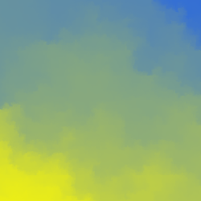
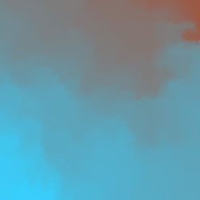
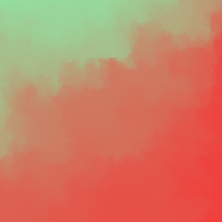

Recursive Colouring
December 2022
Here is a New Year's Eve program for generating random art on an HTML canvas, borrowed (stolen?) from Neil Fraser's website. Neil is a programmer who inspires me: among other things he is responsible for the string editing routines that now underly collaborative editing in Google Docs. He has been writing versions of this colouring program since the 90's to get familiar with new programming languages, so this is definitely not original material from me, but the images it produces are too cool to resist figuring out for myself. Plus, others have already written about the benefits of unoriginal writing, and surely one stranger's internet opinion is enough to validate my own, right?
The program works by recursively dividing the canvas into subquadrants, using the four corners of the current quadrant to generate seed colours for the following recursive step. Choose colours for the first four corners, set the algorithm running, and the entire canvas will fill in until recursion bottoms out on 1x1 subquadrants. The subdivision goes something like this:
[subdivision gif here]
One website refers to this as the Persian Rug Algorithm, but I can't find much else written about it, so I have no idea if it's a well-known technique or not. It does seems like something that could come up pretty naturally in generative art, though. Choosing the intial seed colours randomly and picking subsequent colours by randomly interpolating between the two nearest seeds produces different results each time:
   
Nice!
I need to think of some more adjectives besides 'cool' and 'neat' by the way, yeesh...
To see my implementation in JavaScript (again, borrowing heavily from Neil Fraser...does that make this a port if his version that I checked out was written in Dart?), click here.